Misión
Fortalecer la interacción entre la academia y los territorios rurales de Nariño mediante equipos interdisciplinarios que generan soluciones sostenibles con participación comunitaria, formando profesionales con compromiso social y ambiental.
Fortalecer la interacción entre la academia y los territorios rurales de Nariño mediante equipos interdisciplinarios que generan soluciones sostenibles con participación comunitaria, formando profesionales con compromiso social y ambiental.
Ser un programa líder en la articulación universidad-territorio en el sur de Colombia, reconocido por su enfoque interdisciplinario, su contribución al desarrollo rural sostenible y la formación de profesionales con conciencia social y ambiental.
Docentes, egresados y estudiantes de Colombia y Chile. Cada quien desde su disciplina, todos con el mismo propósito: trabajar junto a las comunidades del territorio.
Pasa el mouse o toca una foto para conocer a cada integrante y sus conexiones.
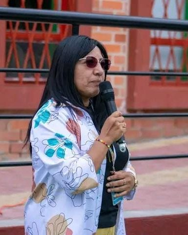
Docente de Comercio Internacional · Universidad de Nariño, Sede Regional Ipiales
Acompaña el PIRI en Nariño desde el primer convenio, en 2010. Gestiona el convenio REI-259422 y la movilidad estudiantil con la UFRO.
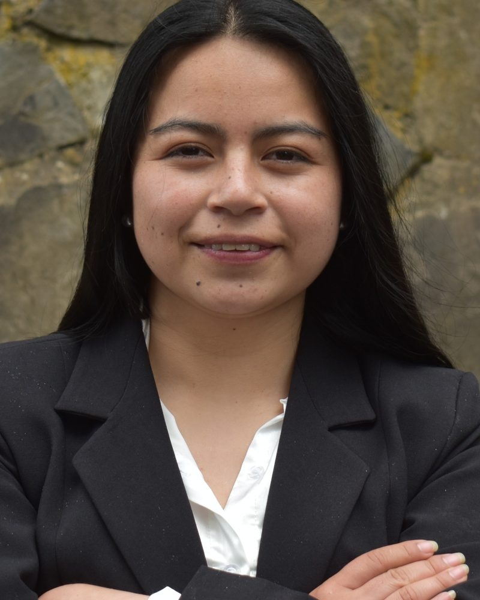
Egresada de Comercio Internacional · Universidad de Nariño
Une conocimiento técnico, investigación aplicada y saberes comunitarios en contextos interculturales. Hizo su práctica profesional en la UFRO, Melipeuco Chile.
Inglés B2 · ORCID
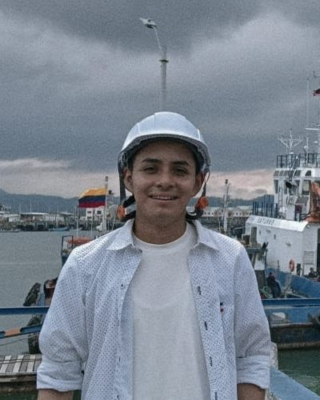
Egresado de Comercio Internacional · Universidad de Nariño
Experiencia en proyectos I+D+i de agricultura 4.0, IoT y cadenas de suministro. Hizo su práctica profesional en la UFRO, Angol,Chile.
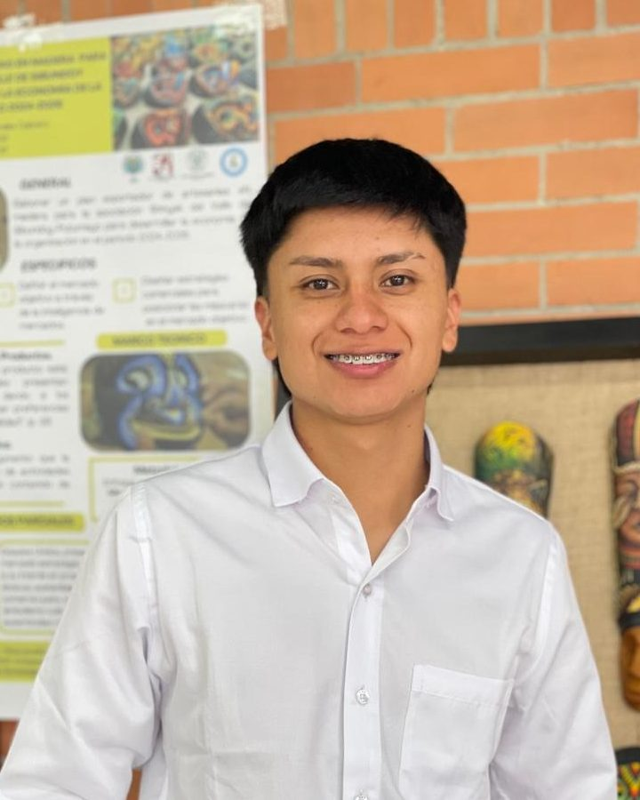
Estudiante de Comercio Internacional (9.º semestre) · Universidad de Nariño
Apasionado por el aprendizaje constante, le motiva asumir nuevos retos y aplicar lo que sabe para resolver problemas reales.
Estudiante de Comercio Internacional (9.º semestre) · Universidad de Nariño
Curiosa, creativa y abierta a nuevas experiencias. Explora ideas y busca maneras de aportar desde lo que sabe y lo que va descubriendo.
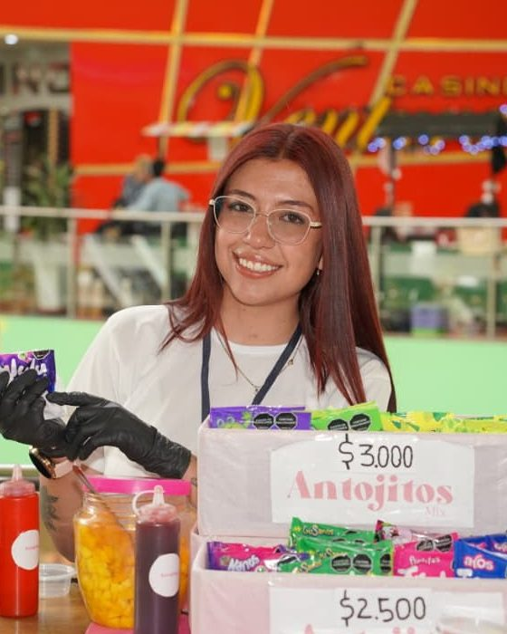
Estudiante de Comercio Internacional (9.º semestre) · Universidad de Nariño
Versátil y creativa, conecta con las personas a través de la comunicación y aporta al equipo una mirada comercial y estratégica.
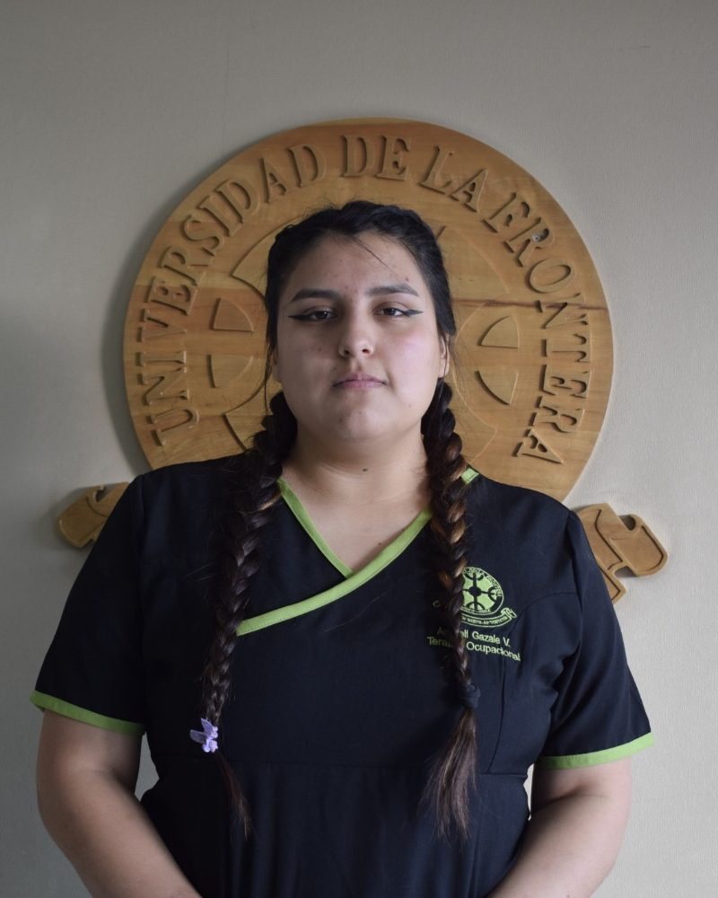
Estudiante de 5.º año de Terapia Ocupacional · Universidad de La Frontera (Chile), en movilidad en la sede Ipiales
Curiosa y con ganas de aprender, participa en voluntariados y actividades comunitarias. Le interesan la justicia social, los derechos y la interculturalidad, y busca intercambiar saberes con las personas.
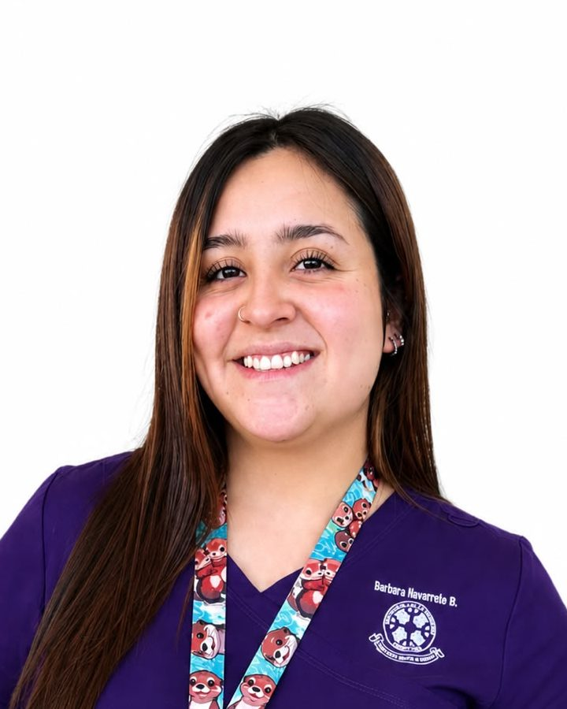
Estudiante de Nutrición · Universidad de La Frontera (Chile), en movilidad en la sede Ipiales
Empática y comprometida, entiende la nutrición desde una mirada humana, cercana y atenta a las necesidades de cada persona.
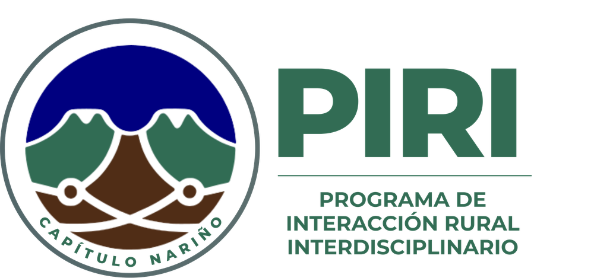
El significado de nuestra identidad.
Las montañas y el volcán representan el paisaje de Nariño y el contexto rural donde trabaja el programa.
Las líneas y nodos interconectados son la colaboración entre disciplinas y entre estudiantes, docentes y comunidades rurales.
La forma circular sugiere integración, comunidad y un trabajo articulado entre universidad y territorio.
Trabajamos con universidades e instituciones que comparten el compromiso con el territorio.
Colombia
Chile
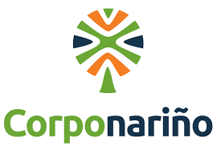
Ventanilla de Negocios Verdes
Aliado estratégicoSede Regional Ipiales
Institución baseEmprendimiento universitario: incubación, alianzas estratégicas y modelos de negocio
Unidad académicaTrabajo conjunto para impulsar los negocios verdes del departamento, articulando la academia, la institucionalidad ambiental y el emprendimiento universitario en beneficio del territorio.
Estudiantes de varios programas trabajan de forma interdisciplinaria para que los negocios verdes de la región avancen hacia la certificación. El trabajo conjunto fortalece las capacidades locales y abre oportunidades para el desarrollo sostenible.
Certificaciones, imagen comercial y preparación para mercados nacionales e internacionales.
Modelado de rutas 3D, marketing digital y gestión tecnológica para promover los emprendimientos.
Formación académica que se suma al trabajo con las unidades productivas.
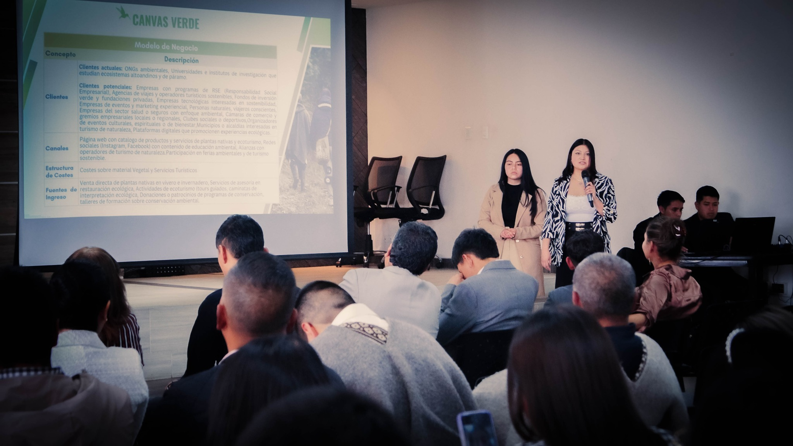
Reproducir video: Conoce el procesoDocumentación de unidades productivas y planes de mejora bajo criterios de certificación verde.
Plan de trabajo desde el curso Ética y Compromiso Social.
Planificación de contenidos e interacción con la comunidad.
Podcast, artículos, videos e infografías.
Diseño y simulación de rutas georreferenciadas.
Diseñar, visualizar y gestionar proyectos con enfoque ambiental.
Tareas de comunidad y compromiso social empresarial.
Acciones documentales para el desarrollo del proceso.
Certificaciones, etiquetado, imagen y atención al cliente.
Diseño y presentación bajo el enfoque de investigación-acción participativa.
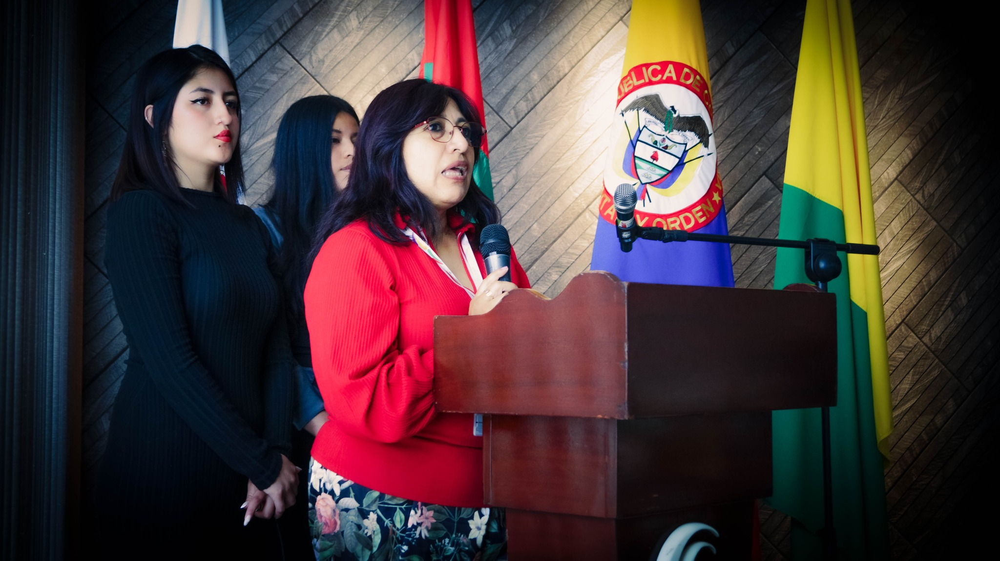
Del primer trabajo con las comunidades a las muestras empresariales.
Inicio del trabajo con estudiantes y comunidades.
Proceso de implementación con estudiantes en territorio.
Hoja de trabajo con Francisco Chavés, de la Ventanilla de Negocios Verdes. Primera muestra de negocios verdes, con 12 empresas, y planes de mejora para la certificación verde.
Socialización de los negocios verdes y de los procesos académicos. El 8 de agosto se firma el convenio REI-259422 con la Universidad de La Frontera.
12 empresas presentaron sus proyectos sostenibles. Participaron estudiantes de X semestre de Comercio Internacional, de V semestre de Ingeniería de Sistemas y la Ventanilla de Negocios Verdes.
2:00 p. m. Calle 1 No. 3-81, La Floresta, bloque 1
Continuidad
Se forman nuevos equipos para dar continuidad al proceso.
Empresa certificada
Empresa certificada
Momentos del proceso. Toca una foto para verla en grande.